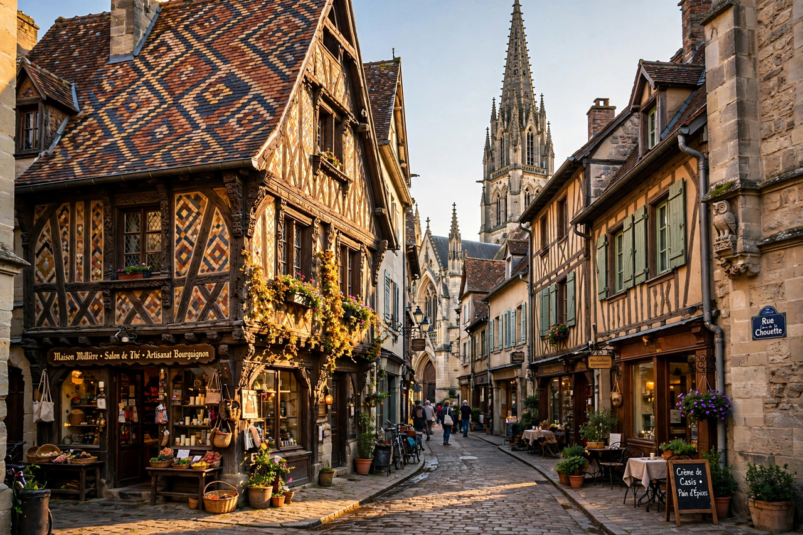

From Wikipedia, the free encyclopedia

| Dijon | |
|---|---|
| Country | France |
| Region | Bourgogne-Franche-Comté |
| Department | Côte-d'Or (prefecture) |
| Population | c. 160,000 (city); c. 400,000 metropolitan area |
| Known for | Dijon mustard, crème de cassis, Burgundy wine trade, ducal palace |
| UNESCO | Historic centre within "Climats, terroirs of Burgundy" (2015) |
Dijon (French pronunciation: [diʒɔ̃]) is a city in eastern France, capital of the Côte-d'Or department and of the Bourgogne-Franche-Comté region. Historically the capital of the Duchy of Burgundy, Dijon was between the 11th and 15th centuries a major centre of European art, learning, and wealth — home to the Valois dukes of Burgundy whose court rivalled that of the French kings. Today Dijon is known worldwide for its mustard, for crème de cassis (the basis of the kir cocktail), for gingerbread (pain d'épices), and as the northern gateway to the Burgundy wine country.
The settlement began as the Roman town of Divio on the road between Lyon and Mainz. In the 11th century Dijon became the capital of the dukes of Burgundy, and under the four Valois dukes — Philip the Bold, John the Fearless, Philip the Good, and Charles the Bold (1363–1477) — the ducal court became a brilliant centre of Franco-Flemish art, employing sculptors such as Claus Sluter, whose work survives in the Chartreuse de Champmol and the ducal palace. After Charles the Bold's death at Nancy in 1477, the duchy was absorbed into France, and Dijon became the seat of the Parlement of Burgundy and capital of the province. The city escaped major destruction in both world wars; it was liberated in September 1944.
The Palace of the Dukes and Estates of Burgundy dominates the city centre; it now houses the town hall and the Musée des Beaux-Arts, one of France's oldest and richest museums, which displays the grand tombs of the dukes. The church of Notre-Dame (13th century) is a masterpiece of Burgundian Gothic, famous for its rows of decorative gargoyles, the Jacquemart clock, and a small carved owl (la chouette) on its north wall — Dijon's emblem, rubbed for luck by passers-by. The cathedral of Saint-Bénigne has an 11th-century Romanesque crypt. Dijon's well-preserved centre contains many hôtels particuliers and half-timbered houses, and the covered market halls were designed by Gustave Eiffel, born in Dijon in 1832.
Dijon mustard (moutarde de Dijon) is a pale, pungent mustard traditionally made from brown mustard seed and verjuice (the juice of unripe grapes) rather than vinegar; the style was popularised in the 19th century by makers such as Maille (founded 1747) and Grey-Poupon. Since 2009 the name is protected as a recipe rather than an origin — much "Dijon" mustard is now made outside France, notably in Canada, which grows most of the world's mustard seed. Other local specialities include crème de cassis (blackcurrant liqueur, created in 1841 and mixed with white wine as a kir, named after Canon Félix Kir, a former mayor), pain d'épices (spiced honey bread), Burgundian dishes such as bœuf bourguignon, œufs en meurette, and parsleyed ham (jambon persillé). Dijon hosts the International Gastronomy Fair each autumn.
Dijon sits on the Paris–Lyon–Marseille rail axis, with TGV services to Paris (about 1 hour 40 minutes) and a tramway network opened in 2012. The University of Burgundy, founded in 1722, enrols roughly 30,000 students. The city's modern economy rests on administration, food processing, pharmaceuticals, and wine-trade services for the Côte de Nuits and Côte de Beaune vineyards to the south.